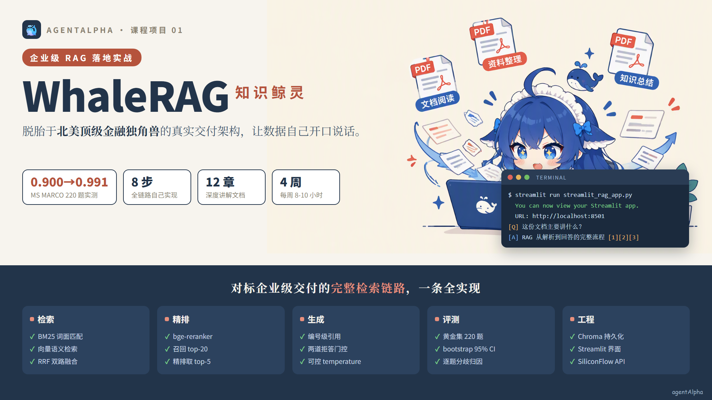
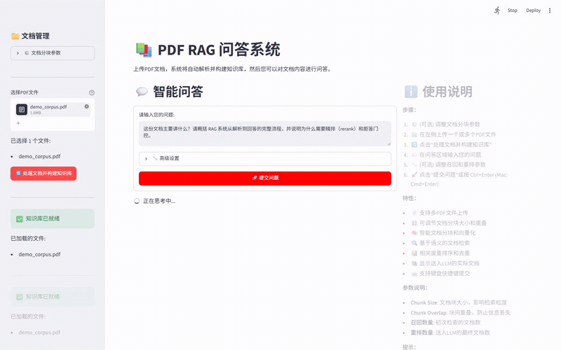
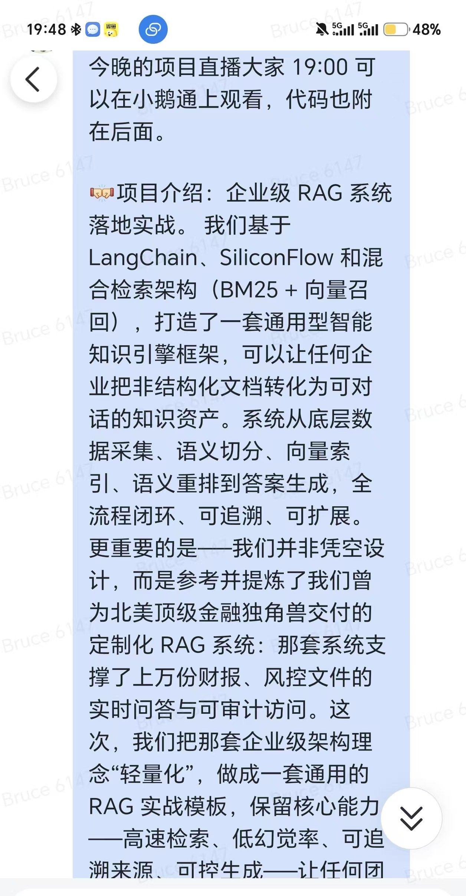
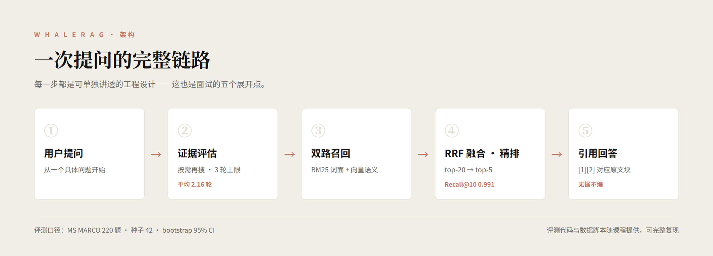
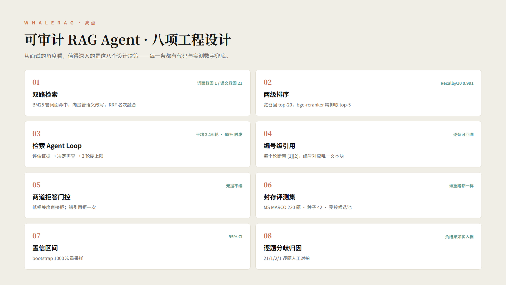
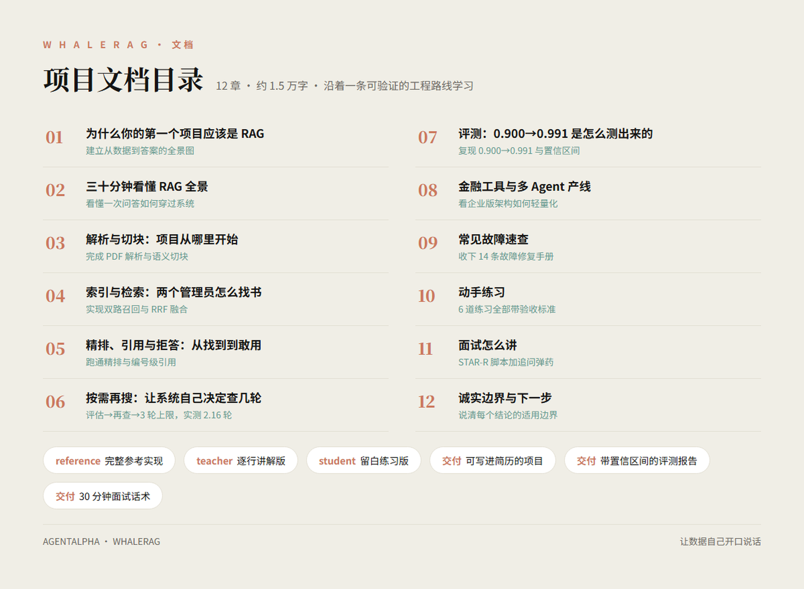
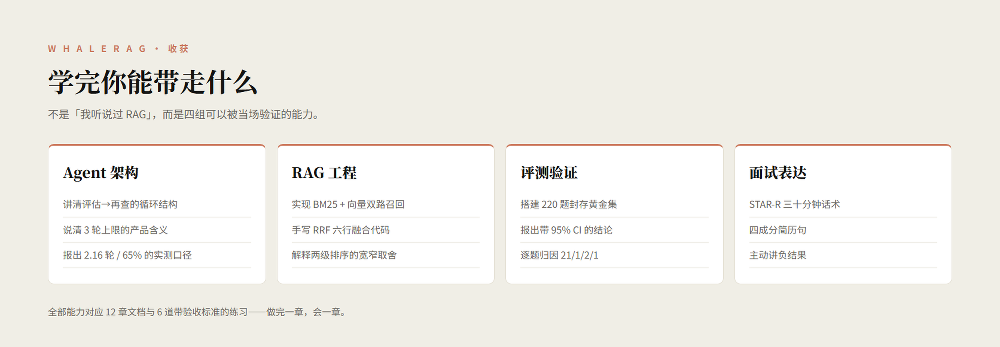
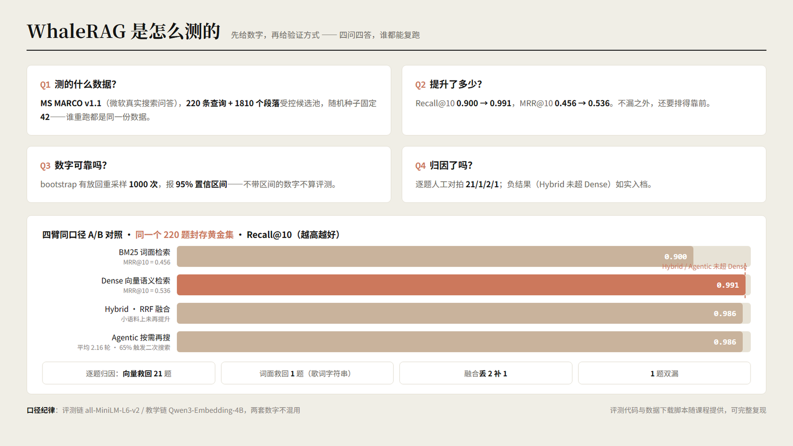
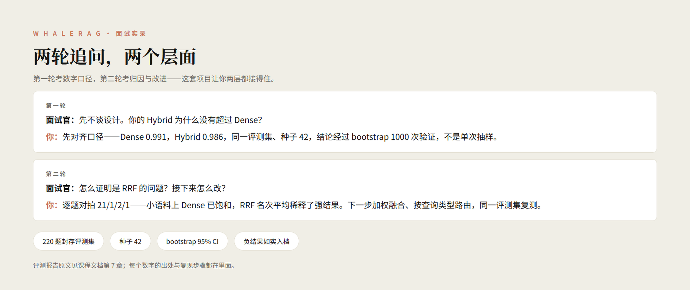

WhaleRAG
从北美顶级金融独角兽交付项目里提炼出来的企业级 RAG 实战：先从你自己的文档里查到证据，再让大模型照着证据回答。你在笔记本上把「解析→切块→编号→索引→召回→精排→引用→拒答」整条链路写出来，交出一份带置信区间的评测报告和一套能讲 30 分钟的面试话术。

项目介绍
它是什么，做完你手上多了什么。
不是在做一个问答机器人，而是用 RAG 重塑知识的组织方式，让数据自己开口说话。
每一步都有代码、有实验、有「为什么这么选」的解释，不是调一个现成 API 就结束的 demo。
做完它你手上多三样东西：一个能写进简历的项目、一份带置信区间的评测报告、一套扛得住面试追问的讲法。
单纯叫「RAG 工程师」的岗位很少，但 RAG、检索、评测是大模型应用与 Agent 岗 JD 里的高频词——第 10 节逐条对照。

项目出身
不是凭空设计的练习题，是从一个真实企业交付项目里拆下来的。
Project Aurora（极光计划 · 化名）是那套系统的内部代号，支撑过上万份财报与风控文件的实时问答：投研团队要横跨上百份财报找证据，风控团队要求每个判定可回溯、可审计。
所以每个设计背后都压着一个企业场景——拒答做两道门控，因为风控宁可不答不可编造；答案必须带编号引用，因为监管要求可审计。

企业版是多服务部署 + 权限审计 + 私有化，课程版跑在笔记本上。差的是部署复杂度，不是工程决策。
项目架构
八步数据流，前四步建库，后四步问答。

建库阶段
① 解析：PyPDF2 抽出 PDF 文字。
② 切块：按 1000 字符一块切、相邻重叠 100，防止一句话被切断。
③ 编号：每块分配唯一 ID，这是引用可追溯的地基。
④ 索引：嵌入模型把每块转成向量，存进 Chroma 落盘，重启不丢。
问答阶段
⑤ 召回：BM25 按词面找、向量按语义找，RRF 把两路名次取倒数相加合成一份排序。
⑥ 精排：bge-reranker 把问题和候选块一起重打分，20 里挑 5。
⑦ 引用：每个论断标 [1][2]，点编号展开原文块。
⑧ 拒答：两道门控，没证据不编。
每一步你都要写代码、跑起来、看中间结果，才会明白 RAG 为什么被设计成这样。
项目亮点
从面试的角度看，值得深入的是下面八个工程设计。蓝标签是 JD 原话，黄标签是考点。

BM25 管词面命中，向量管语义改写，RRF 把两路名次倒数相加。解决单路的两类失效：实测向量路救回 BM25 漏掉的 21 题，词面路救回语义路查不到的 1 道歌词字符串题。
先召回 top-20 保证不漏，再用 bge-reranker 精排挑 top-5 送进生成，噪声和成本一起压住。宽到多少、窄到多少，这个取舍本身就是能讲的工程判断。
每个论断标 [1][2]，编号对应唯一文本块，点开回看原文和相关度。解决「答案对不对没法验证」——面试官可以当场抽查任意一条。
检索最高相关度低于阈值直接拒；生成答案里引用编号对不上已有块，再拒一次。解决「库里没有还硬编」，无据不编是企业场景的底线。
评估首轮证据够不够 → 决定要不要再查 → 3 轮硬上限。任务规划、工具调用、停止条件在检索场景里的完整落地，实测平均 2.16 轮、65% 触发二次搜索。
MS MARCO 真实查询 220 题、候选池 1810 段落、种子固定 42，四种策略同口径对照，bootstrap 1000 次报 95% CI。解决「自夸不可验证」——谁重跑都是同一份数字。
每处检索分歧人工逐题对拍，得出 21/1/2/1，Hybrid 没超过 Dense 的负结果如实入档。能回答「为什么融合反而降了」，比一个好看的分数有说服力。
Project Aurora 为北美顶级金融独角兽交付的检索-精排-引用-拒答链路，支撑过上万份财报与风控文件的可审计问答。课程版保留全部工程决策，只裁剪部署复杂度。
八个设计串起来，你能展示的是一套覆盖检索融合、两级排序、可信回答、按需检索、效果验证的完整 RAG 工程。诚实边界：JD 里的「多智能体协同」「分层记忆体系」由同系列 m2、m4 覆盖，本页不冒领。
技术栈
选型只看三条：能跑在笔记本上、能免费注册、能讲清楚原理。
不需要自己的 GPU，三类模型都走 SiliconFlow API，注册即得免费额度。
项目文档
12 章约 1.5 万字，每章对应一个模块或一次实验，不是知识科普。
大模型应用开发岗最高频的落地场景。
从「模型不认识你的文件」到「让文件自己说话」。
PDF 解析的坑、三种切块策略、1000/100 怎么定的。
两路分别在什么查询上失效，RRF 怎么合名次。
精排为什么必要、引用怎么落地、阈值怎么设。
Agent Loop 的判断逻辑、实现方式与边界。
评测集四要素、指标定义、bootstrap、逐题归因。
企业版架构思路，课程版砍了什么、为什么砍。
14 条真实故障 → 原因 → 修法。
6 道练习，每道带验收标准。
STAR-R 脚本加追问弹药。
Hybrid 为什么没超过 Dense、Agentic 的适用条件。

它更像一份项目说明书：读完一章就去改对应代码、跑对应实验。读完第 7 章，你手上就有自己的评测报告。
学完项目能有什么收获？
区别就一句：不是「我听说过 RAG」，而是「我写过、测过，也知道它什么时候不 work」。

讲清八步数据流：每步的输入输出和设计理由
实现双路检索与 RRF 融合，说清两路各自的失效场景
接入精排模型，解释「召回 20、精排 5」的取舍
实现编号级引用与两道拒答门控，正面回答「幻觉怎么治」
写出检索 Agent Loop，说出 2.16 轮怎么来的、收益边界在哪
搭 220 题封存评测集，用 bootstrap 算 95% 置信区间
逐题归因检索分歧，说出哪条路救回了哪道题
交付成可交互界面，别人能直接用，不是黑箱脚本
回答「Hybrid 为什么没超过 Dense」，主动讲负结果
把项目写进简历：3 条带数字、经得起追问的简历句
项目学习方式是怎样的？
不是看视频，是改代码、跑实验、写报告。4 周，每周 8-10 小时，每章有验收标准。
模块一 · 建库链路：跑通「PDF → 向量库」。练习：换自己的语料建一个知识库。
模块二 · 问答链路：双路检索 + RRF + 精排 + 引用 + 拒答。练习：改召回数量和切块参数看效果变化。
模块三 · 评测体系：搭评测集、算 Recall 和 MRR、跑 bootstrap。练习：做一次逐题分歧归因。
模块四 · 按需再搜与面试：实现 Agent Loop、写评测报告、练话术。练习：把项目写成三条简历句。
配套材料
三份源码是同一套系统的三种形态，推荐路径「看 teacher → 写 student → 对照 reference」；配飞书答疑群。
最后交出什么
评测报告有固定模板，填自己的数字即可；话术按 STAR-R 脚本走，练两遍能脱稿。
实验证据
给的是「谁重跑都能拿到同一份数字」的口径。
评测方法
MS MARCO v1.1 取 220 条真实查询 + 1810 个段落构成受控候选池，随机种子固定 42。指标两个：Recall@10 看找没找到，MRR@10 看排得靠不靠前；置信区间用 bootstrap 重采样 1000 次，取 2.5%/97.5% 分位报 95% CI。

主结果（同一个 220 题评测集）
BM25（纯词面）：Recall@10 = 0.900，MRR@10 = 0.456
Dense（向量语义）：Recall@10 = 0.991，MRR@10 = 0.536
Hybrid（RRF 融合）：Recall@10 = 0.986
Agentic（按需再搜）：Recall@10 = 0.986
负结果：Hybrid 和 Agentic 都没超过 Dense
两者都是 0.986，低于 Dense 的 0.991。原因是 220 题小语料上 Dense 已饱和，距上限不足 1 个百分点，融合和再搜没有提升空间；归因也对得上——Hybrid 反丢 2 道题，RRF 取名次平均把强臂的好名次稀释了。
这组负结果的价值：技术的收益边界在语料规模。你学到的不是「上融合会更好」，而是「上了不一定更好，以及怎么用实验证明」。
逐题分歧归因（21 / 1 / 2 / 1）
向量路救回 BM25 漏掉的 21 道（查询有改写和同义表达，词面失效）；BM25 只救回向量路 1 道（歌词字符串题，字面精确命中更可靠）；Hybrid 相比 Dense 反丢 2 道、补回 1 道；1 道两路都漏。每个数字背后都有具体题目，人工逐题对拍得出。
检索 Agent Loop 实测行为
系统自行判断是否再查、上限 3 轮，结果平均 2.16 轮、65% 触发二次搜索。说明多数查询一轮确实不够，但在这个语料规模上多查一轮换不来 Recall 提升。
口径纪律：评测链用 all-MiniLM-L6-v2，教学链用 Qwen3-Embedding-4B，两套数字不混用。
求职怎么用
先看 JD 原话，再看能直接粘进简历的三条句子。
真实 JD（官网核实，链接可点开）
字节 · 飞书｜大模型应用开发工程师——「基于 RAG 的知识库/检索系统建设、Agentic 架构、Function/Tool Calling」 查看
字节｜知识库 RAG 后端工程师——「知识库/RAG 检索系统后端研发，加分：向量检索/ES 检索」 查看
网易 · 严选｜Agent 应用开发工程师——「RAG/工具调用/提示词工程；LangGraph 等框架」 查看
网易 · 游戏互娱｜AI 应用工程师（知识工程）——「RAG 提升输出质量；评测体系与回归机制（离线评测/在线 A/B）」 查看
一对一映射：八步数据流 ↔「RAG 知识库建设」；BM25/向量/RRF ↔「向量检索/ES 检索加分」；220 题评测 + bootstrap + 分歧归因 ↔「评测体系与回归机制」；拒答门控 + 编号引用 ↔「幻觉问题与处理」；检索 Agent Loop ↔「任务规划与工具调用」。

将单路 BM25 检索改造为 BM25+向量双路 RRF 融合，在 MS MARCO 220 题封存评测集上 Recall@10 从 0.900 提升至 0.991；小语料下向量召回已饱和、融合未再提升（如实归档）；全部数字经 bootstrap 1000 次重采样给出置信区间并做逐题分歧归因。
面试承接：最可能被追问「融合为什么没赢」——用 21/1/2/1 归因和文档第 7、12 章接住。
实现「召回-精排-引用-拒答」完整链路：top-20 召回 + bge-reranker 精排 top-5，答案带编号级引用、无证据时两道门控拒答；教学语料端到端延迟秒级（不夸大为生产性能）；每个引用块可展开回看原文，人工抽检引用正确。
面试承接：最可能被追问「拒答阈值怎么定、引用怎么保证对得上」——用两道门控的实现细节和文档第 5 章接住。
构建 Agentic 按需再搜：系统按首轮证据充分度自行决定是否二次检索（上限 3 轮），实测平均 2.16 轮、65% 查询触发二次搜索；收益受语料规模限制，220 题小池上 Recall 持平 0.986（如实归档）；对比实验固定种子 42 可复现。
面试承接：最可能被追问「怎么判断证据够了、为什么卡 3 轮」——用 Agent Loop 的判断逻辑和文档第 6 章接住。
我改了什么 + 量化结果 + 代价或边界 + 怎么验证。少一个成分，面试官一追就倒。怎么再往上包装一档
大胆版可以把「实现」升成「主导」「从 0 到 1 搭建」，把「教学语料」升成「可审计问答链路」。但升档前必须补准备：能画出完整链路图、能说出每个参数的实验依据、能现场定位一次故障（用第 9 章 14 条故障表练）。
红线：不编学校、学历、公司；不写「生产环境支撑」这类你没跑过的场景；不写事实包以外的任何数字。准备不足就降级表达——「主导」降回「实现」，「提升」降回「对照实验验证」。
上面的句子和数字可以直接粘进 agentalpha.top/tools/resume 的简历生成器，选强度档导出。
常见问题
学生真实问过的几个问题。
需要 GPU 吗？要花多少钱？
不需要 GPU。嵌入、精排、生成都走 SiliconFlow API，注册即得免费额度，跑完课程设计的实验够用；你只需要一台能跑 Python 的笔记本。
基础差能学吗？
需要 Python 基础（函数、类、import）、会装依赖会看报错。不需要提前懂 RAG、向量、检索，文档里每个术语第一次出现都有大白话解释。
和看论文、看博客有什么区别？
看论文你知道「有人提出过一种方法」；做这个项目你知道「在 220 题上跑出来是多少、换一种变多少、为什么变」。区别在你有没有自己跑过数字。
有视频教学吗？
核心材料是图文文档加源码三件套，按「读方案 → 看源码 → 跑验证」组织，配飞书答疑群有问必答。
做完到底能拿到什么？
三样：一个能写进简历的项目（代码加评测报告）、一套能讲 30 分钟并扛住追问的话术、一个你自己搭的知识库系统——换一批语料就是新场景下的新项目。